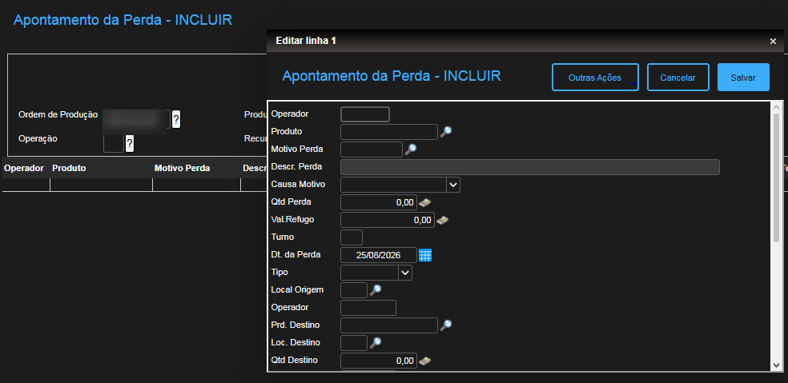

ANTESTOTVS / Protheus

Campos demaisPouca orientaçãoDigitação manual
O lançamento de refugo e borra deixou de ser um processo difícil no TOTVS e passou a ser guiado, integrado e pronto para análise.

O ERP continua sendo a fonte oficial. O que mudou foi o caminho até ele.
